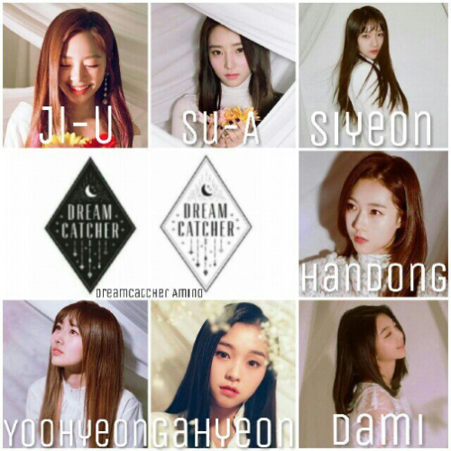

드림캐쳐-데자부
시대를 넘나들며 사람들의 꿈속을 휘젓고 다니는 드림캐쳐를 떠오르게
하는 인트랙.
덥스텝의 자극적인 요소와 글리치합의 감각적인
사운드의 조화가 특히 인상적이다.
빛을 잃은 너의 두 눈동자여
지난 모든 기억들을 지워 줘
끝없이 마주하는 괴로운 현실의 Deja Vu 속, 모든 걸 포기해서라도
지키고 싶은 존재에 대한 약속을 담았다.
아름다운 피아노 선율
뒤에 이어지는 웅장한 오케스트레이션, 강한 메탈과 조화되는 콰이어
사운드는 드림캐쳐가 추구해 온 음악 스타일 속, 또 하나의 새로운
색채를 보여준다.
특히 코러스 파트의 'Oh, Deja vu'는 마치
반복되는 괴로움 속에서 울려 퍼지는 절규를 느끼게 한다.
[Raid of Dream]과 타이틀곡 '데자부 (Deja Vu)'는 '킹스레이드' 세계에 녹아든 드림캐쳐의 꿈 이야기를 그린 작품이다. '킹스레이드'의 메인 스토리를 테마로 안타까운 대립과 기시감, 그리고 꿈과 꿈이 교차하는 의문과 혼란 속에 포기할 수 없는 단 하나의 존재와 목표를 향한 도전을 표현했다.
타이틀곡 '데자부 (Deja Vu)'에서 '킹스레이드'와 함께한 특별함이 가득한 새로운 세계를 펼쳐놓았다면, 수록곡들을 통해선 드림캐쳐가 지금까지 그려온 '악몽 스토리'의 못다 한 비하인드 스토리들을 곳곳에 녹여 듣는 재미를 한층 배가시켰다.